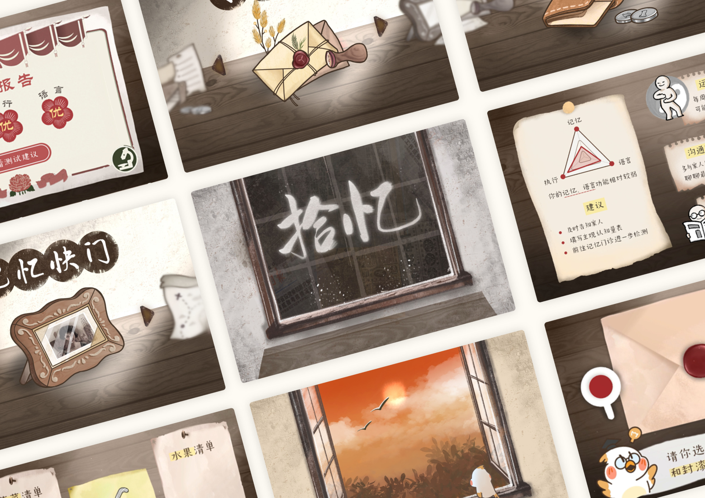
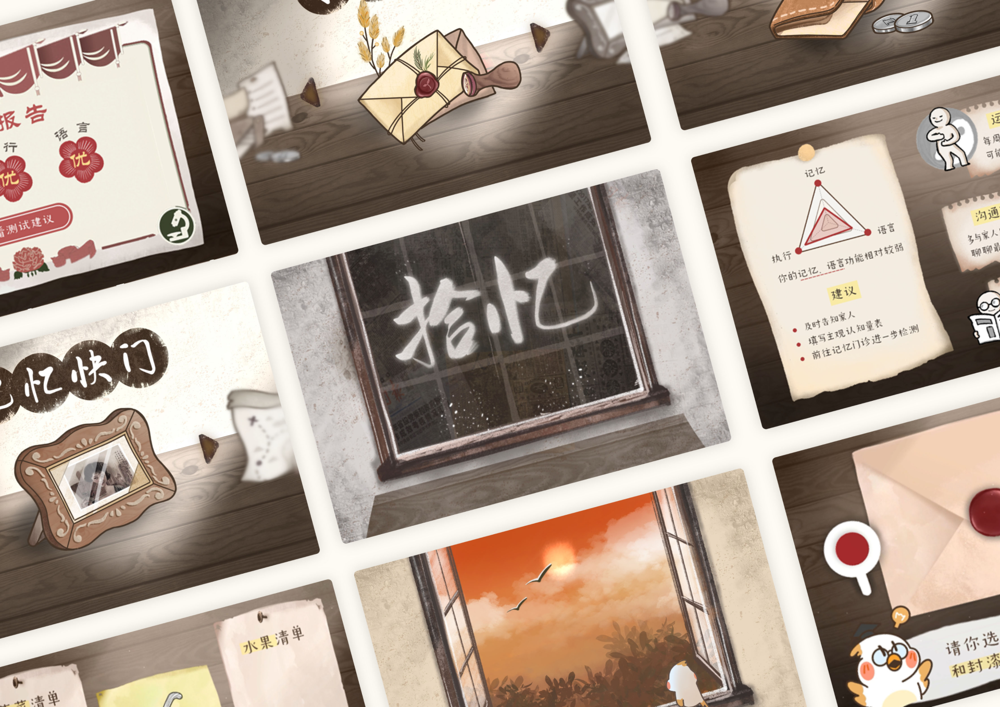

拾忆 | 有温度的认知症初筛应用
- 个人设计方案
- 2021
《拾忆》是一款为的阿尔茨海默症患者设计的认知障碍筛查游戏，设计在上海第六人民医院老年科的帮助下开展。
阿尔茨海默症，俗称老年痴呆，是一种多发于老年人的神经退行性疾病。目前，我国是阿尔茨海默患者数最多的国家，该疾病的高昂预后成本为成千上万的家庭带来了沉重的负担。目前临床上该病成因尚不清晰且无法治愈，研究的重点在于早期筛查和诊断，及时干预以延缓病情。但目前国内关于AD的知识宣传和早期筛查普及不到位，所以大部分患者前往就医时已经属于疾病的晚期了。
由此，我希望通过设计一款面向社区和家庭的早期认知筛查相关的应用，为老年人群提供游戏化的、轻松便捷的评估服务。希望它能成为一个推广认知筛查的有效手段，将原来集中在医院的筛查压力下沉到社区和家庭，同时丰富早期筛查的方式，提升老年人对阿尔茨海默症的了解，优化筛查的体验。
 

其他信息
2021年移动应用创新赛
一等奖、社会责任奖
Apple 中国企业责任报告2021-2022
应用入选报告